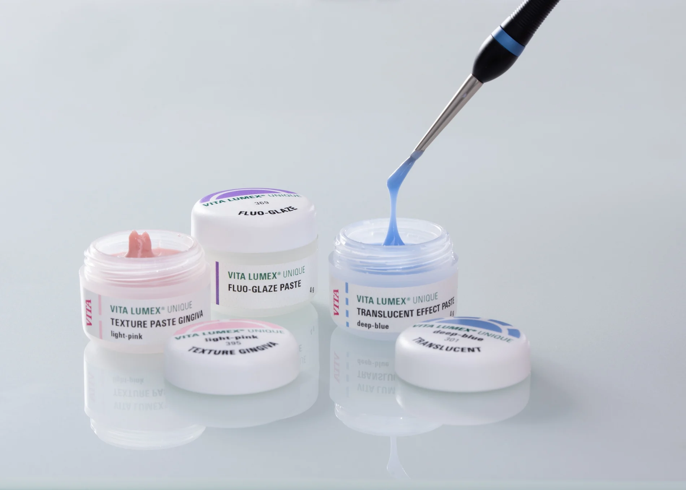
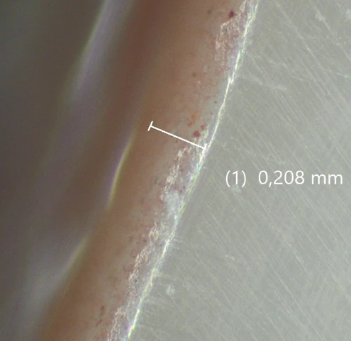
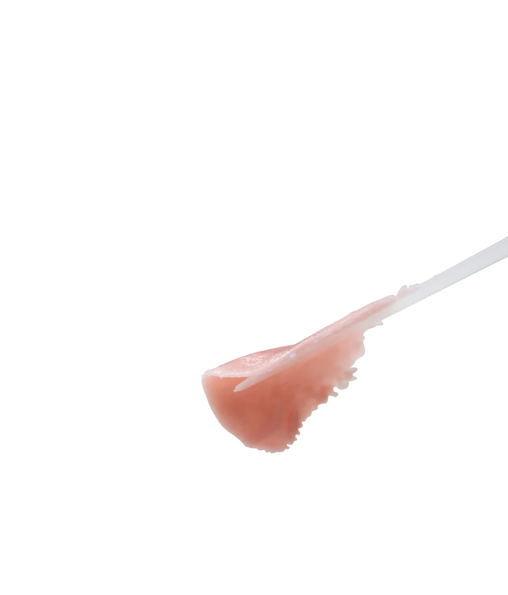
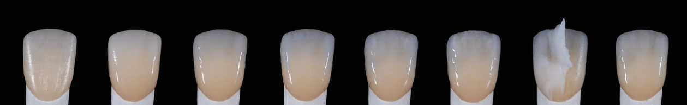
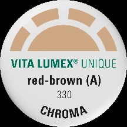
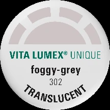
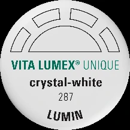
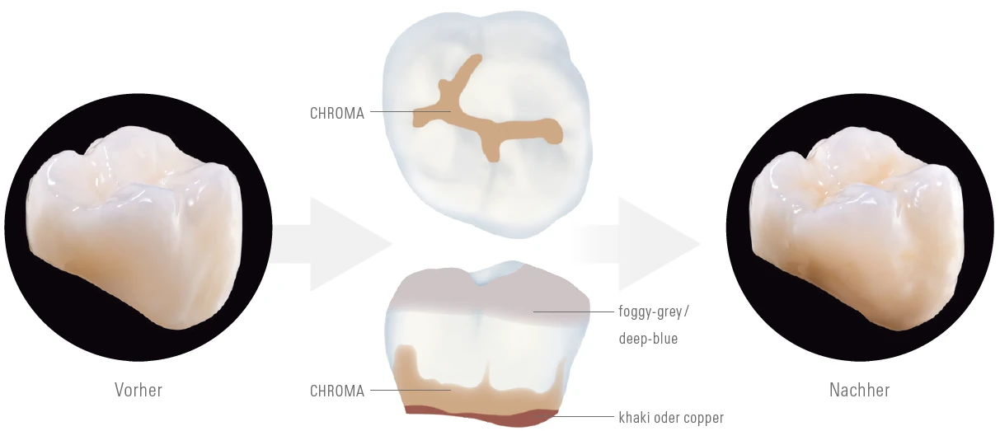
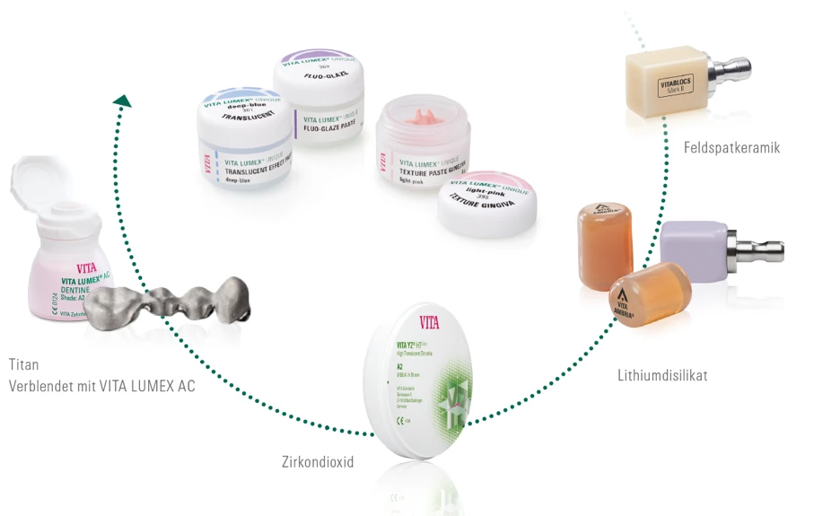

VITA LUMEX® UNIQUE · Curso teórico-práctico
De monolíticoa único.
Color. Estructura. Textura. Glaseado.
Norman Díaz · 24 OCT 2026
02 · Qué es
Una cerámica
en estado líquido.
Un sistema de pastas cerámicas fluorescentes y no fluorescentes para colorear, estructurar, texturizar y glasear.

EL SISTEMAColorear
Ajustar el croma dentro del grupo de tonos correspondiente.
0104
Capas ultrafinas 3D.
Forma, estructura y puntos de contacto.03 · La necesidad
Más profundidad.
Menos espesor.
0,1–0,2
mm
Aplicación ultrafina de TEXTURE PASTE para modificar forma y textura con precisión.

04 · Cuatro ventajas reales
01
Flexibilidad
Caracterización 3D, microcapas ultrafinas y técnicas de aplicación ajustables.
01 / 04

TEXTURE PASTE · 0,1–0,2 mm
05 · POWER FLUO-GLAZE
La estética cambia
con la luz.
La combinación de 365 nm y 395 nm busca una lectura fiable y natural bajo distintas condiciones de iluminación.
Visibilidad + naturalidadDe la máxima lectura del efecto a una percepción cercana a la luz visible.
365 nm
395 nm
Seguridad estética
independiente de las condiciones de iluminación.06 · Cómo funciona
Una restauración.
Cinco decisiones.




Croma
La base cromática.
Mamelón
Arquitectura interna.
Translucidez
Profundidad incisal.
Textura
Lectura superficial.
Glaseado
Acabado y fluorescencia.
07 · BASIC / CREATIVE
Un sistema.
Dos niveles de libertad.
Flujos fáciles de aprender, con espacio para un resultado predecible o una caracterización más libre.

BASIC
Una ruta clara hacia el resultado.
Situación inicial, distribución de materiales y resultado final en una secuencia fácil de leer.
08 · Datos y compatibilidad
Precisión que
se puede medir.

INDICACIONES
Cuatro familias de soporte.
- 01Dióxido de zirconio
- 02Disilicato de litio
- 03Titanio · Grado 1–5
- 04Cerámica de feldespato
09 · Aplicación y resultado
Antes. Técnica.
Resultado.
Desliza para comparar la situación inicial con la lectura final de la restauración.
↔
ANTESRESULTADOControl y precisión
El color ya es visible durante la estratificación.
Un resultado de cocción controlable para un trabajo predecible.